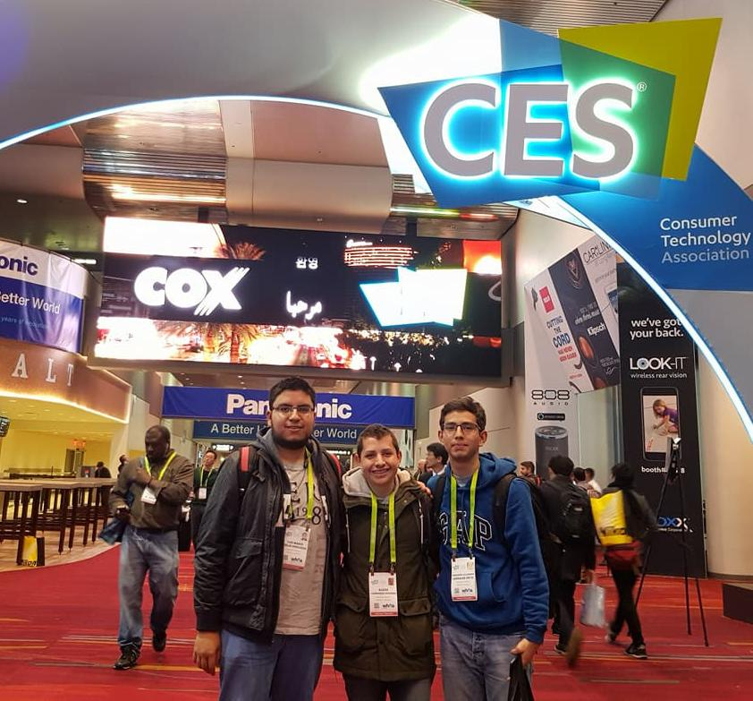

DonkieTown is a mobile robotics platform designed to be affordable and scalable. The idea was to have a testbed with multiple intelligent cars driving at the same time while communicating their driving intentions and state variables as Intelligent Connected Vehicles alike. It was developed over ROS using python and C++. Before building the robots and bringing up the testbed, the driving software had to be designed first. I used Gazebo Sim to do such a task. Using Gazebo was also handy to perform some Software and Hardware in the Loop testing and to get some performance statistics. In addition, I used Simulink for Kinematic Modelling, Controls, and Kalman Filters tunning.
For more details, go to DonkieTown's repo. For technical details read the IEEE paper. Video demos are available at my robotics YouTube channel.
πstache is a Single-Issue In-Order pipelined core based on the RV32I (RISC-V 32-bits Integer Instructions) ISA subset. I started developing it for my first computer architecture class and it is composed of 5 different pipelined stages, a forwarding unit, and a hazard unit.
πstache was intended to be loaded into a Cyclone IV E EP4CE115F29C7 FPGA. The analysis and synthesis ensure the use of 1,076 total logic elements and a maximum clock frequency of 71.89 MHz is warranted by the timing analysis with a slow 1200mV 85C Model.
For more, go to the πstache repository.In 2023, for the very first time, a group of graduate students of Centro de Investigación en Matemáticas joined the Mexican Robotics Tournament and asked for my help. At that time, I was starting an on-site job at Intel in Guadalajara, i.e., I was in another city. To collaborate, we use an open Gazebo project of the Parrot Bebop quadcopter and borrow 3 bebops for the competition. Thanks to gazebo, I could develop the base library for our autonomous driving software, and special-purpose software for some challenges. We finished 1st 🦾 in the competition in 2023!
I am really intrigued by understanding Deep Learning. For the sake of that wondering, I took Hugging Face's course on Deep Reinforcement Learning and I have been trying to code each algorithm (and others such as Monte Carlo Tree Search) from scratch. I display only the scenarios to prove to work. I can't tell if my other implementations work because I have been using an apple M1 chip for training.
Actually, I think this adds little to this portfolio of mine, but I think it is certainly worth mentioning. Please, go to my repo to explore more about this one.
Politécnicos Pro Alzheimer was a smart mat originally made to track my grandmother. She has Alzheimer and at that time she used to get lost. In High School, my classmates and I created PPA, we won the Samsung Solve For Tomorrow contest and won an invitation to the Consumer Electronics Show 2018 and a grant to develop our prototype. I started college networking with private health care institutions and Startup accelerators.
I was 18-20 years old when I received most of the responsibilities, and since I was also new in Mexico City, PPA could not succeed.
Contact me for inquiries and collaborations:
ealarralde@gmail.com